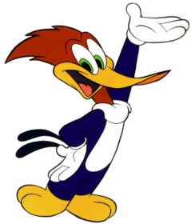

The red-headed woodpecker is a captivating and distinctive species of woodpecker with its striking appearance, versatile diet, unique foraging behaviors, and notable vocalizations. It plays an important role in various ecosystems by contributing to insect control and aiding in seed dispersal.
FIND OUT MORE 